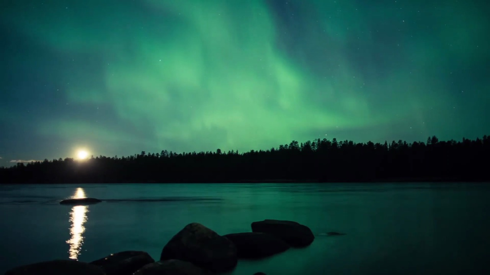
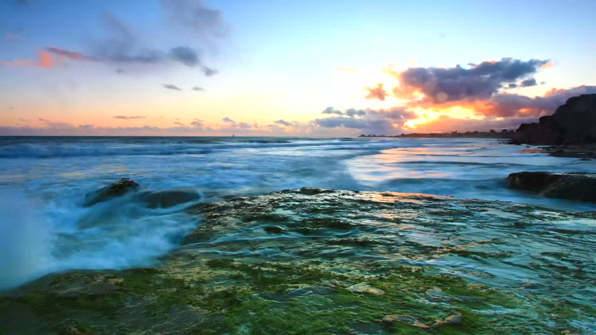
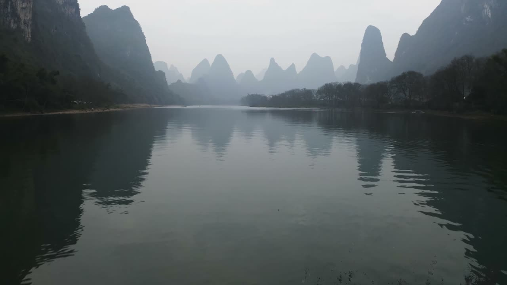

INCLUDED · FILMED
Northern lights
A little wonder from the real night sky.

White, pink and brown noise. Real rain and ocean recordings. Make space for meditation and bedtime, with an optional scene or a black screen.
For Apple TV · Free & open source · Now on the App Store
Guided breathing for 5, 10 or 20 minutes. Follow the circle, choose a sound and enable optional spoken rhythm cues. Pause, resume or continue listening with the picture off.
For relaxation and self-led meditation. No diagnosis, treatment or sleep tracking.
Optional system voice says when to breathe in and out, even with the picture off.
From Lapland’s northern lights to a quiet shoreline. Every landscape is real footage, shared with its creator’s license.
A little wonder from the real night sky.

Santa Barbara, through the eyes of Dhilung Kirat.

A different view of the world, filmed from above.
Photographs shown are actual frames. Source video and audio remain separate; pair them however you like.
Choose a sound to start audio and real footage. Controls hide after 10 seconds; Select shows them again. Picture off keeps audio playing. Stop sound ends the session. There is no idle auto-play, standalone scenery playback, photo gallery or clock mode.
Nightfall changes the picture, not the television’s backlight or another app’s playback.
Layer up to three recordings, adjust each level, then listen with a scene or absolute black.
Guided breathing for 5, 10 or 20 minutes. Follow the circle, choose a sound and enable optional spoken rhythm cues. Pause, resume or continue listening with the picture off.
Choose optional 4K films and 48 kHz lossless recordings. See sizes, cancel, or remove them anytime.
No account, ads or analytics SDKs. Preferences and routines stay on your Apple TV.
Every feature and download is free. If Nightfall makes your evenings better, an optional one-time tip helps its independent development.
US reference prices. Apple displays your local price before purchase. No subscription or extra features. Tips are purchased only inside the app.
A few things to know ↗